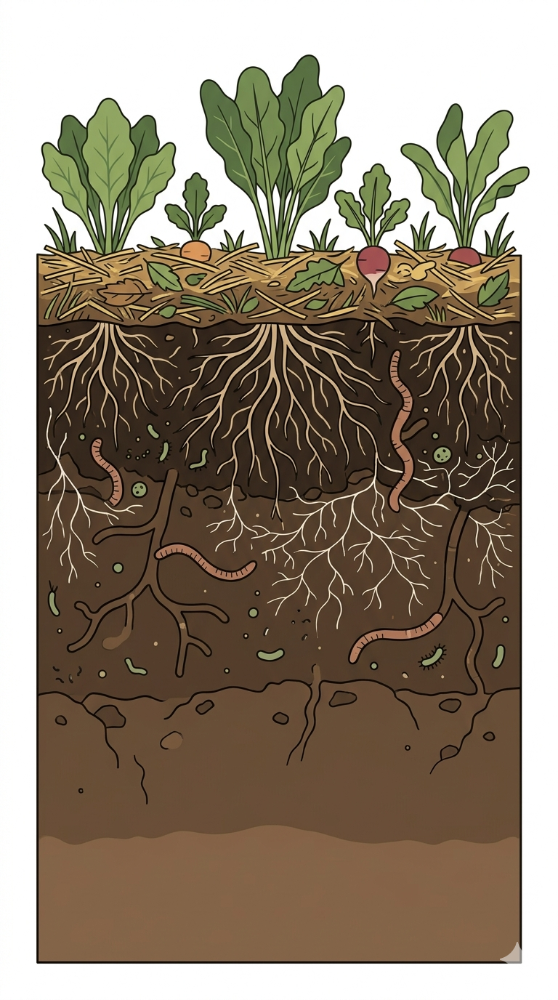

Wat is het?
Je bodem is een levend systeem, geen leeg medium.
Waarom werkt het?
- zit vol leven en netwerken
- bouwt zelf structuur op
- houdt water en voeding vast
- herstelt zichzelf als je niet verstoort
Hoe werk je ermee?
- niet meer spitten of omkeren
- bodem altijd bedekt houden (mulch)
- organisch materiaal bovenop toevoegen
- niet op je teeltbedden lopen
Nuance / wanneer
In het begin voelt het trager. Maar onder de oppervlakte begint het echte werk.